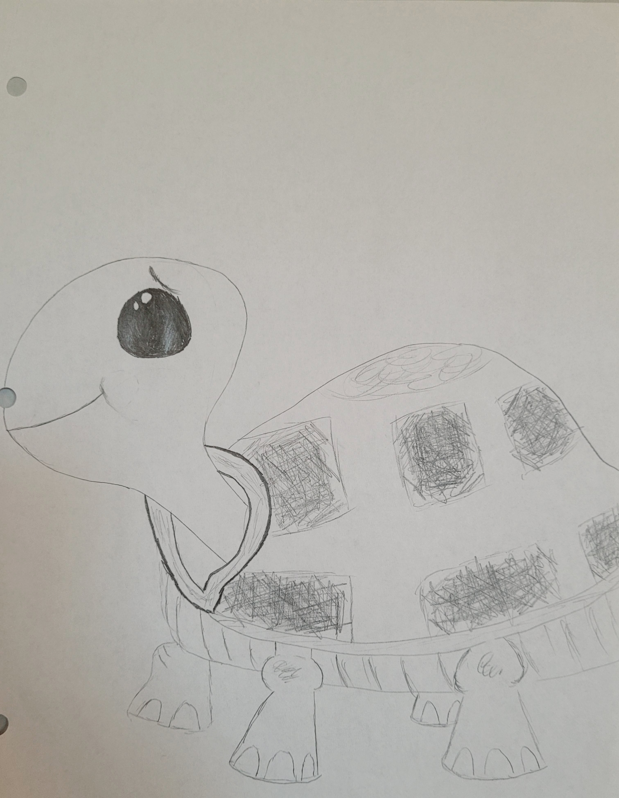

My StoryBasic ShapesFruitsGlassSphere ShadingSimplistic CatSimplistic TurtleSimplistic DogSimplistic BunnyPeony in the RainCalligraphy AlphabetSpooky Skull"Always Believe" - Studio Ghibli Quote.Orange Trapped in GlassHellow DarlingThe ChoiceThe Only LimitNot Giving UpOpal Gemstone CharacterTourmaline Gemstone CharacterRetro GirlHungry Fat CatLily in the SunDreaming of ParisTweety BirdLadyYzma as a CatCalligraphy ZentangleKricket ZentangleZentangle
Earlier Drawings
Key to ImaginationLittle PenguinShy Bunny

Mr. TurtleTwo OwlsShockedWoman and the RoseFlowers in My Living RoomSong Portal
Photography
Posed Jaxflower sproutesBirdy on bird feederSlowmo fireTunnelBeachLighthousePeacfulFort WordenBirdy on treeScenic snowCharlie in the snow